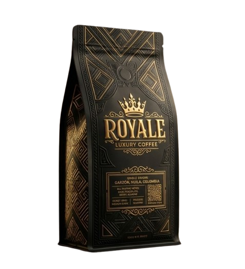
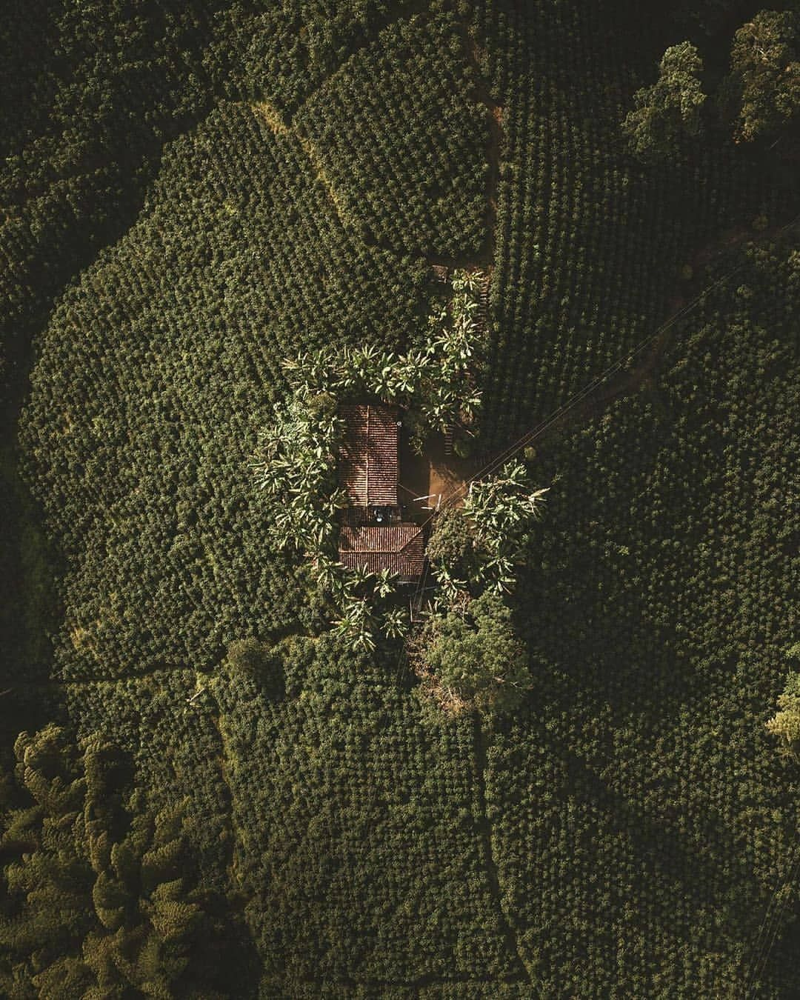

Coffee is not a product.
It’s culture.
Microlotes de origen. Garzón, Huila.
Café de alta puntuación, cultivado con criterio.

Huila no es origen.
Es estándar.
En las montañas del Huila, el café no es industria apresurada. Es práctica lenta, consciente y obsesiva. Cada microlote es una decisión.

Origen
Garzón, Huila es una región donde el café se cultiva con altitud, tiempo y criterio. Cada microlote responde a decisiones humanas, no industriales.
Contacto
Producción limitada. Solicitudes bajo criterio.